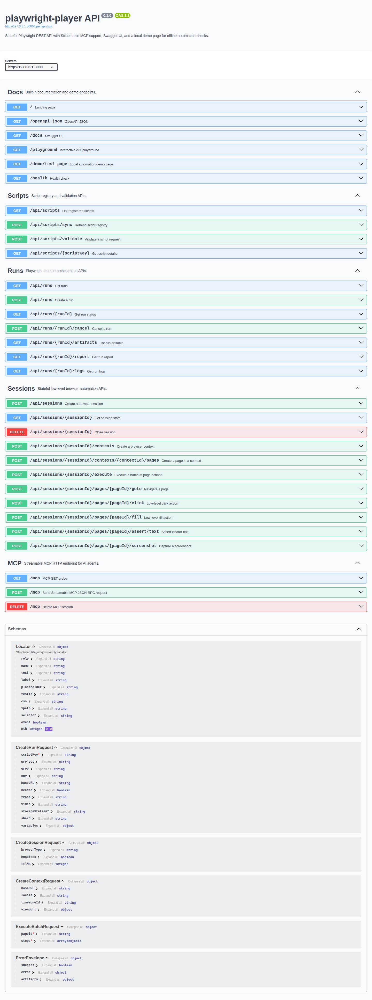
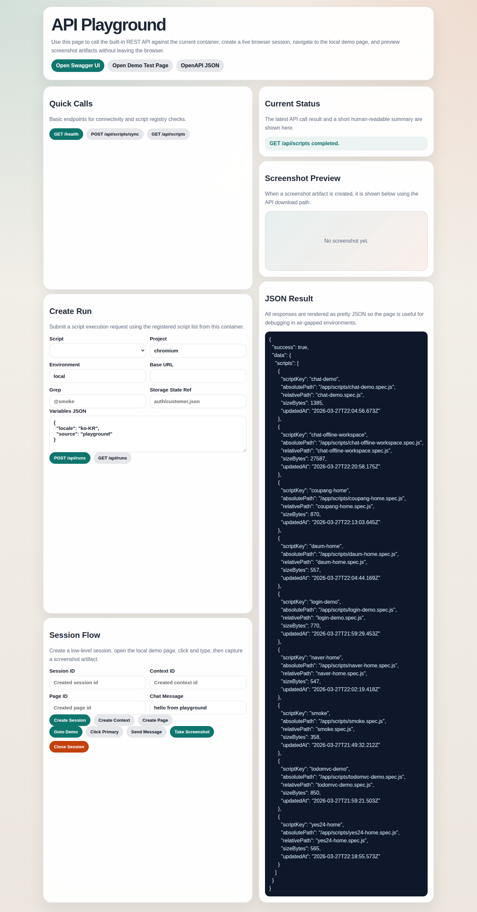
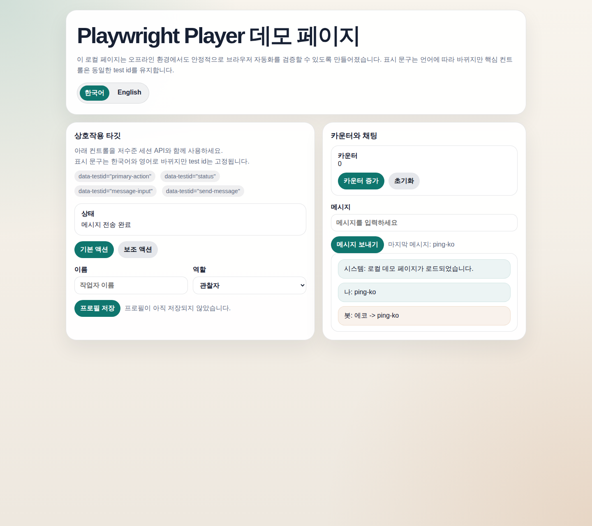

Offline-ready browser control plane
Playwright browser automation as a session-aware REST API and Streamable MCP.
Ship one container, keep browser state alive across calls, and let humans or AI agents drive the same automation surface.
- Single-container deployment for offline networks
- Runs API, low-level sessions API, and Streamable MCP in one runtime
- Built-in Swagger UI, API playground, screenshots, trace, and guide viewer
Recommended shape
Browser sessions stay warm, contexts isolate users, and AI agents call the same MCP tools that operators can test from REST.
Why teams use it
One runtime, three operating modes
Script registry and runs
Register Playwright specs, trigger runs with runtime variables, and collect report, logs, screenshots, trace, and video artifacts.
Low-level session control
Keep browser, context, and page resources alive while debugging login flows, chat flows, and flaky UI states step by step.
AI-agent authoring assist
Turn natural-language test requests into plans, scaffolds, locator hints, and MCP tool calls that an offline LLM can follow.
Offline deployment
Publish a Docker image as `tar.gz`, load it inside the air-gapped environment, and run Swagger UI, the playground, and demo pages locally.
Recommended flow
From natural-language request to verified browser run
Plan
Use assist APIs or MCP tools to shape the request into actions, variables, and locator strategies.
Inspect
Open a debug session, inspect headings and locator candidates, then refine the script before finalizing it.
Run
Execute the registered spec through `/api/runs` with project, environment, trace, video, and storage state options.
Review
Review artifacts, logs, and reports from the same API surface or by following the generated guides inside this page.
What it looks like
Captured UI from the project itself



Markdown guides
Read operational docs without leaving the landing page
Each guide is stored as Markdown and rendered here in-place. Switch to raw mode if you want the original source.